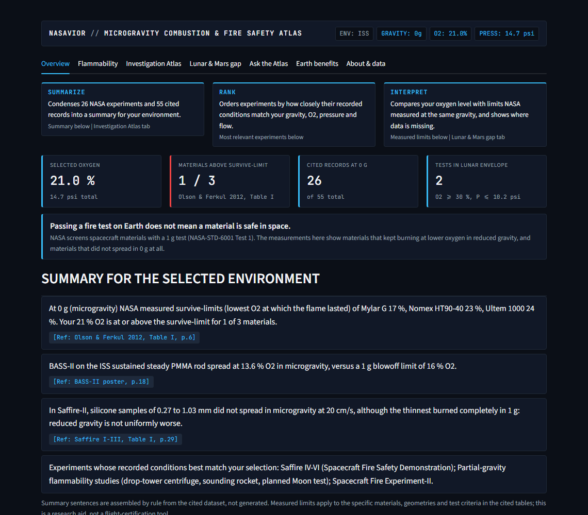
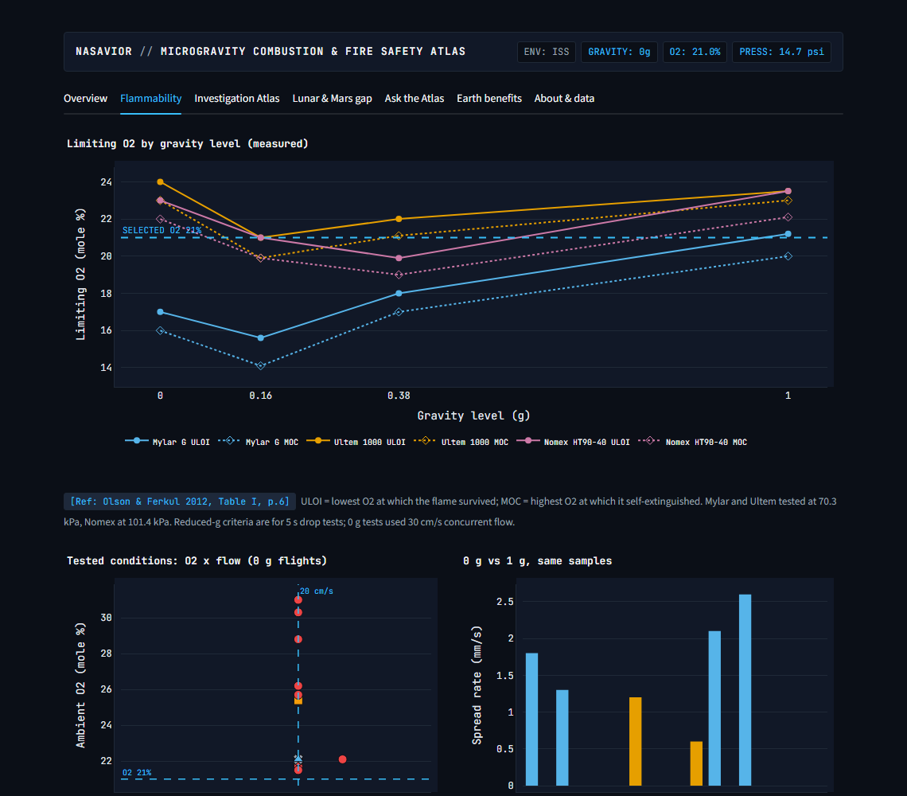
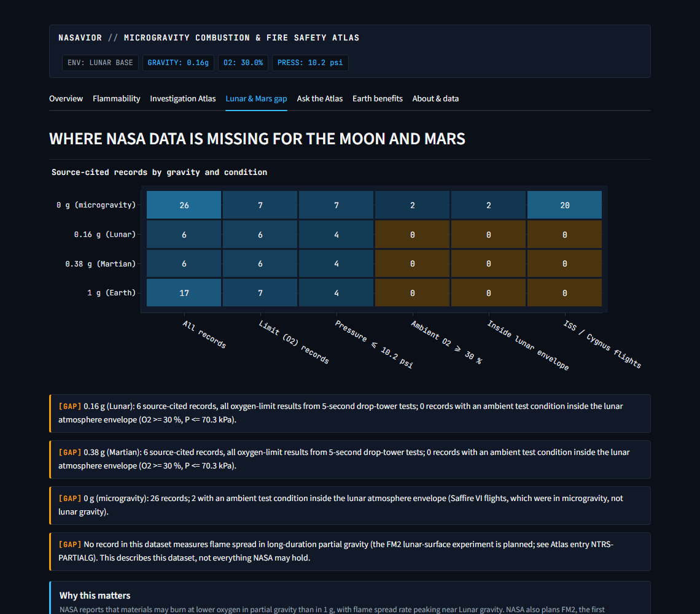
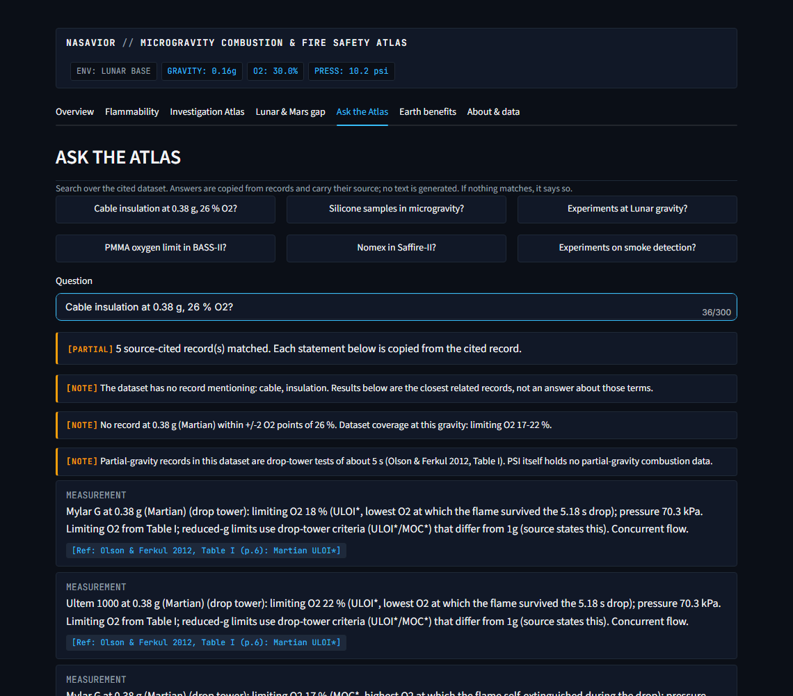

NASA screens materials with a 1 g upward-burning test (NASA-STD-6001 Test 1).
In low gravity buoyancy disappears. A slow ventilation flow can keep a flame alive, so some materials burn at lower oxygen than on Earth.
Flight and drop-tower results are scattered across NASA PSI records and NTRS papers.
No single place lets an engineer compare them for a target atmosphere, such as 34 % O2 at 8.2 psi.
Condenses 26 experiments and 55 cited measurements into a summary for the chosen environment.
Orders experiments by how close their recorded gravity, O2, pressure and flow are to yours.
Compares your O2 level with limits NASA measured at the same gravity, and shows where data is missing.

PMMA rod kept burning at 13.6 % O2. The 1 g blowoff limit is 16.0 %.
Mylar G survived down to 15.6 % O2 at Lunar gravity (5 s drop). Its 1 g limit is 21.2 %.
No silicone sample spread in 0 g at 22.1 % O2. The 0.27 mm sample burned completely in 1 g.

Every 0.16 g and 0.38 g limit in the Atlas comes from a drop-tower test this short.
records at partial gravity inside the lunar atmosphere envelope (O2 ≥ 30 %, ≤ 10.2 psi). The 2 records inside it are Saffire VI flights in 0 g.

Every answer is copied from a record and carries its [Ref: source, page].
A 0 g result is never turned into a 0.16 g value.
Ask for a term the Atlas lacks and it says so: “The dataset has no record mentioning: cable, insulation.”
No API key, no generated text. Known limitations are listed in the app.

Cleaner, more efficient combustion (PSI records ACME Flame Design, FLEX-2).
Models for fire detection and suppression systems in space and on Earth.
FM2, NASA's planned first combustion tests on the Moon (launch planned late 2026), can be added as new rows.